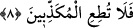

yoluna giren kişilere işâret olunmaktadır.
Büyüklerden birisi şöyle der: “O hidâyete erenleri de en iyi bilendir” âyet-i
kerîmesinin mânâsı; “O tevfika kabiliyetli olanları en iyi bilendir” şeklindedir. Şu hâlde
beyân önderleri; yâni dini tebliğ ile açıklayan kişiler peygamberlerdir. Tevfikın ile
hidâyete ermenin yaratıcısı ise, Hak Teâlâ’dır. Hâdî olan Allah Teâlâ hem beyân eder
ve hem de tevfik nasîb eder. Mahlûk olan hâdi ise sâdece beyân eder. Hakîkatleri
bilmeyen kimse zanneder ki; kul irşâd ve vaazda doğru söylerse, bu o irşâd ve öğüdü,
dinleyenlerin gönüllerinde kabul için etkili olur. Buna karşılık sözünde doğru olmazsa
bu söz kabule etki etmez. Oysa bu yargı tamamen dayanaksız bir vehimden ibârettir.
Çünkü Allah’a peygamberlerden daha yakını, O’nun adına tebliğde daha doğru sözlüsü
ve Allah’ın katından geleni kabulde daha sevimlisi yoktur. Çünkü onlar kalplerinde
merhametin baskın olduğu kimselerdir. Bununla birlikte “kabûl”, onları dinleyen
insanlar arasında herkes tarafından gerçekleştirilmiş bir husus olmamıştır. Tam tersine
tebliğinde doğru sözlü olan bir peygamber “doğrusu ben kavmimi gece gündüz
(îmâna) dâvet ettim; fakat benim dâvetim, ancak kaçmalarını arttırdı” (Nûh, 71/5-
6) demek durumunda kalmıştır.
Bu büyük görev ülü’l-azm peygamberlerin büyükleri tarafından yapıldığı hâlde, bu
çağrı herkesçe kabûl görmediğine göre, buradan anlıyoruz ki, himmetin genel olarak
dâvete muhatap olan kimselerin gönlünde bir etkisi vardır. Sonra dâveti duyan kişiler
arasında bunu kabul eden kimsenin kabulü, tebliği yapan dâvetçi önderin himmetinin
sonucu değildir. Bu kabul ancak ve ancak dâvete muhatap olan kimsenin kendi
nefsindeki yeteneği, gücü sâyesindedir. Şöylesine ki; Allah onun ahlâkına, çağrıyı kabul
etmesini gerekli kılan bir özellik ve maya vermiştir. Allah’ın bâzı insanlarda yaratmış
olduğu ve ancak bunu kendisinin bildiği özel mizaçlar da aynen bu verdiğimiz örnekte
olduğu gibidir. Bu nedenle Allah, yukardaki âyette “hidâyete erenleri de en iyi bilen
O’dur” buyuruyor.
Şeyh Sâdî (k.s.) şöyle demiştir:
Söylediği yaptığına benzemese de
Âlimin sözünü can kulağıyla dinle
“Uyuyan uyuyanı nasıl uyandırsın?”
Böyle diyen iddiâcının söylediği yanlıştır
Öğüt duvara dahi yazılmış olsa
Kişinin ona kulak vermesi gerekir.
8. O hâlde, (hakîkati) yalan sayanlara boyun eğme!